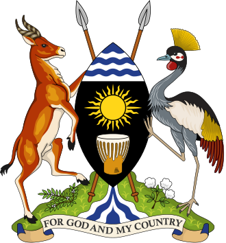
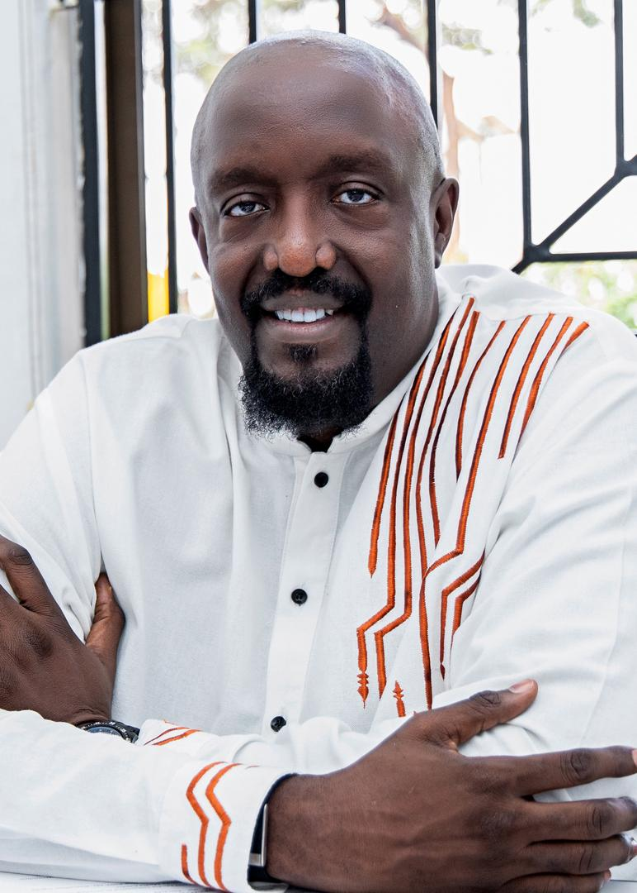
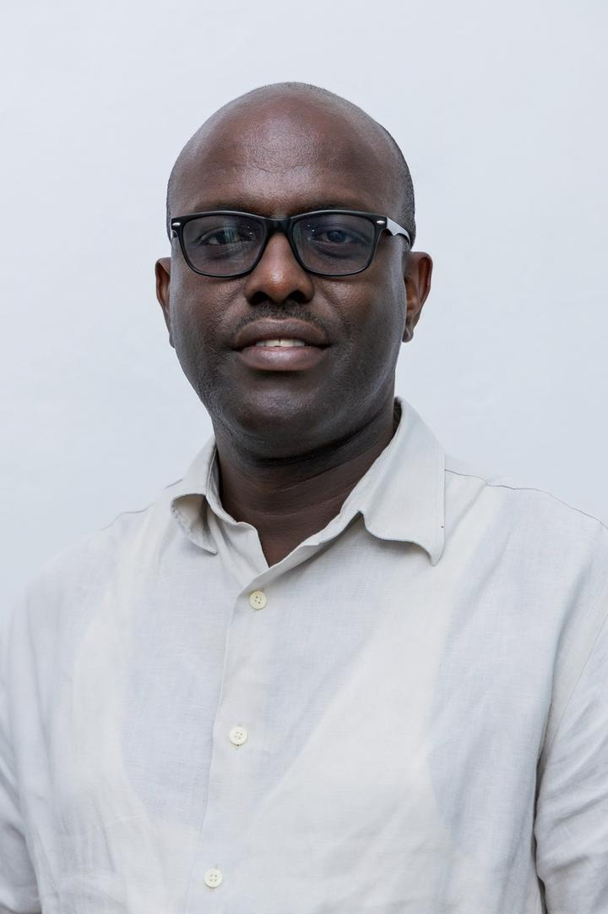
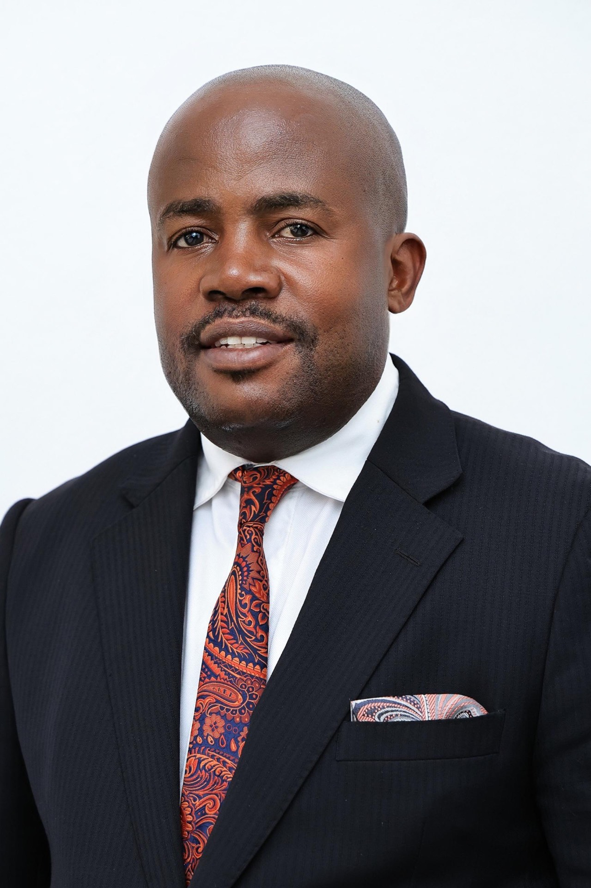

The National Bulletin
Uganda’s flagship hourly news on the hour.

Government Radio
Schedules, presenters and programmes — broadcasting in English, Luganda and Kiswahili.
Now on air
Live programming resumes shortly.
Choose stream
Up next
Uganda’s flagship hourly news on the hour.
Uganda’s flagship hourly news on the hour.
Uganda’s flagship hourly news on the hour.
Programmes
Uganda’s flagship hourly news on the hour.

with Alan Kasujja · Mon 07:00Call-in clinic with the Ministry of Health.
Farmers’ Voice — markets, weather, extension.

with Obed Katureebe · Mon 05:30Citizens’ Q&A with ministries.

with Charles Serugga Matovu · Wed 20:00EAC affairs in Kiswahili.
Scholarships, jobs and innovation.
Parish Development Model — week in review.
Inter-faith reflections.
Executive Director & Lead Anchor
Head of Electronic Media
Talk-show Host & Events Lead
Religious Affairs Host